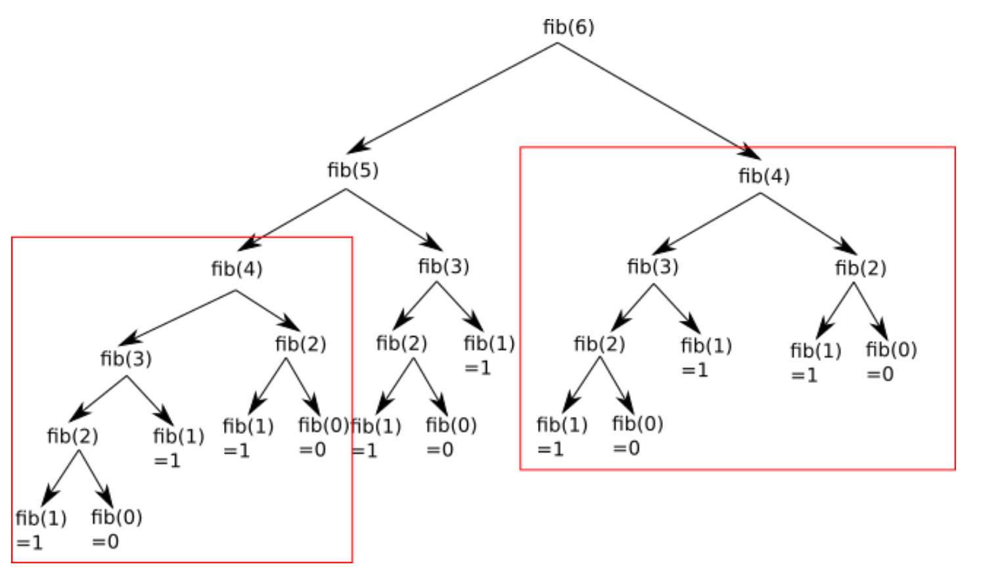

Programmation dynamique#
Contexte#
Exercice 1 :
- Écrire une fonction récursive qui calcule la factorielle n. Rappel : \(n!=1\times 2\times 3\times ...\times n\) `
- Écrire une fonction récursive qui permet de calculer le \(n^{ième}\) terme de la suite de Fibonacci.
Donc pour n = 6, cette deuxième fonction peut se représenter par le schéma ci-dessous :

Vous pouvez constater que l'on a une structure arborescente (typique dans les algorithmes récursifs), si on additionne toutes les feuilles de cette structure arborescente (fib(1) = 1 et fib(0) = 0), on retrouve bien 8.
En observant attentivement le schéma ci-dessus, vous avez remarqué que de nombreux calculs sont inutiles, car effectué 2 fois : par exemple on retrouve le calcul de fib(4) à 2 endroits (en haut à droite et un peu plus bas à gauche) :

Programmation Dynamique#
Premiers exemples sur la suite de Fibonacci#
En considérant l'algorithme précédant, on comprend bien qu'il est particulièrement inefficace de calculer plusieurs fois le même sous-calcul. Afin d'améliorer le temps de calcul de l'algorithme, nous décidons donc de mémoriser les calculs déjà effectués dans un tableau. Il existe deux méthodes différentes :
On pourrait donc grandement simplifier le calcul en calculant une fois pour toutes fib(4), en "mémorisant" le résultat et en le réutilisant quand nécessaire.
On va calculer les nombres de la suite de Fibonacci jusqu'à \(F(n)\) en partant de \(F(0)\) et \(F(1)\). On appelle ce type de méthode une méthode Bottom-Up. Ce n'est pas une méthode récursive.
On va calculer les nombres de Fibonacci récursivement, mais en sauvegardant les calculs déjà effectués dans une liste Python, en profitant de sa mutabilité. On appelle ce type de méthode une approche Top-Down :
Principes de la programmation dynamique#
La programmation dynamique, introduite au début des années 1950 par Richard Bellman, est une méthode pour résoudre des problèmes en combinant des solutions de sous-problèmes, tout comme les méthodes de type diviser pour régner.
Un algorithme de programmation dynamique résout chaque sous-sous-problème une seule fois et mémorise sa réponse dans un tableau, évitant ainsi le re-calcul de la solution chaque fois qu'il résout chaque sous-sous-problème.
La programmation dynamique s'applique généralement aux problèmes d'optimisation, comme ceux que nous avons vu l'an passé lorsque nous avons étudié les algorithmes gloutons.
Application aux algorithmes gloutons#
Rappels pour la version récursive#
Vous avez à votre disposition un nombre illimité de pièces de 2, 5 cts, 10 cts, 50 cts et 1 euro (100 cts). Vous devez rendre une certaine somme (rendu de monnaie). Le problème est le suivant : "Quel est le nombre minimum de pièces qui doivent être utilisées pour rendre la monnaie"
La résolution "gloutonne" de ce problème peut être la suivante :
On prend la pièce qui a la plus grande valeur (il faut que la valeur de cette pièce soit inférieure ou égale à la somme restant à rendre). On recommence l’opération ci-dessus jusqu’au moment où la somme à rendre est égale à zéro.
Exemple : nous avons 1 euro 77 cts à rendre :
- on utilise une pièce de 1 euro (plus grande valeur de pièce inférieure à 1,77 euro), il reste 77 cts à rendre
- on utilise une pièce de 50 cts (plus grande valeur de pièce inférieure à 0,77 euro), il reste 27 cts à rendre
- on utilise une pièce de 10 cts (plus grande valeur de pièce inférieure à 0,27 euro), il reste 17 cts à rendre
- on utilise une pièce de 10 cts (plus grande valeur de pièce inférieure à 0,17 euro), il reste 7 cts à rendre
- on utilise une pièce de 5 cts (plus grande valeur de pièce inférieure à 0,07 euro), il reste 2 cts à rendre
- on utilise une pièce de 2 cts (plus grande valeur de pièce inférieure à 0,02 euro), il reste 0 cts à rendre.
L'algorithme se termine en renvoyant 6 (on a dû rendre 6 pièces)
Exercice :
Compléter la fonction suivante pour qu'elle donne le nombre minimal de pièces utilisées pour une somme s donnée :
Passage en programmation dynamique#
On constate dans la partie précédente que la méthode précédente fait de trop nombreux appels récursifs, qui ralentissent considérablement le temps de calcul, voire plante le programme dès que la taille maximale de la pile est dépassée.
On va donc utiliser la programmation dynamique pour accélérer la vitesse de traitement du problème.
Exercice :
- Compléter la fonction suivante afin qu'elle renvoie le nombre minimal de pièce pour rendre la monnaie, ou None s'il est impossible de rendre la monnaie.
- Est-ce une méthode ascendante ou descendante ?